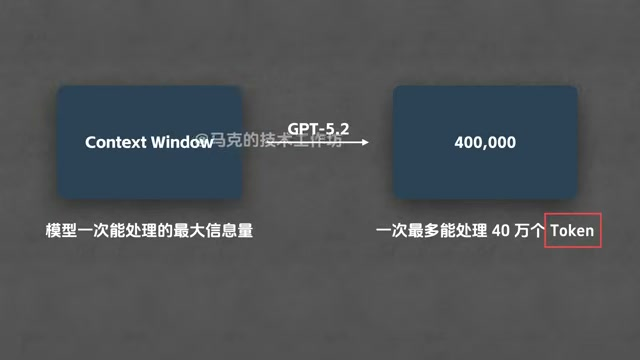
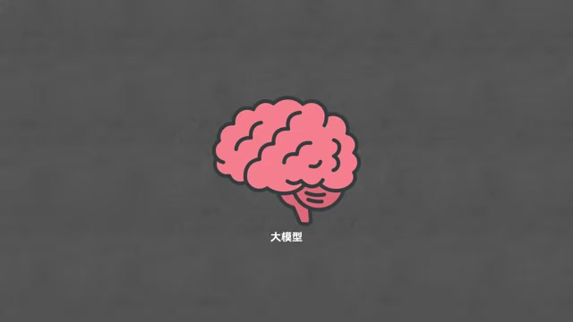
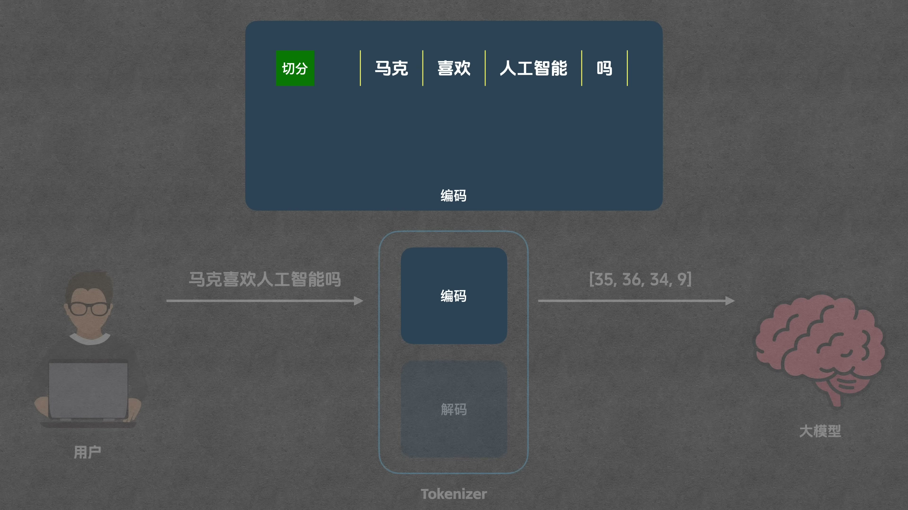
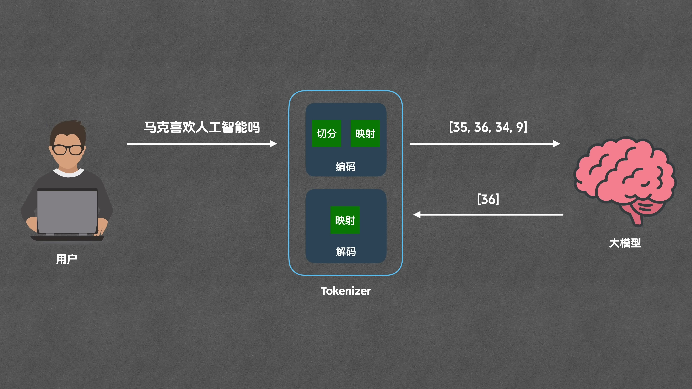
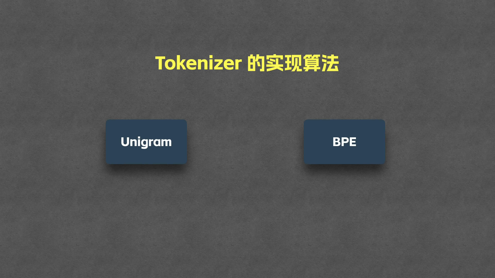
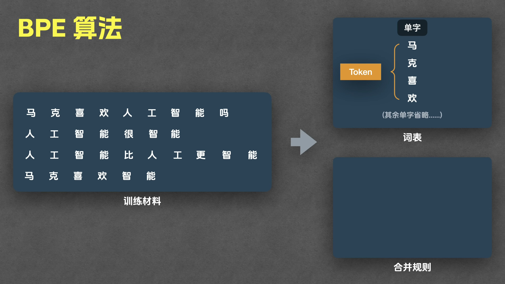
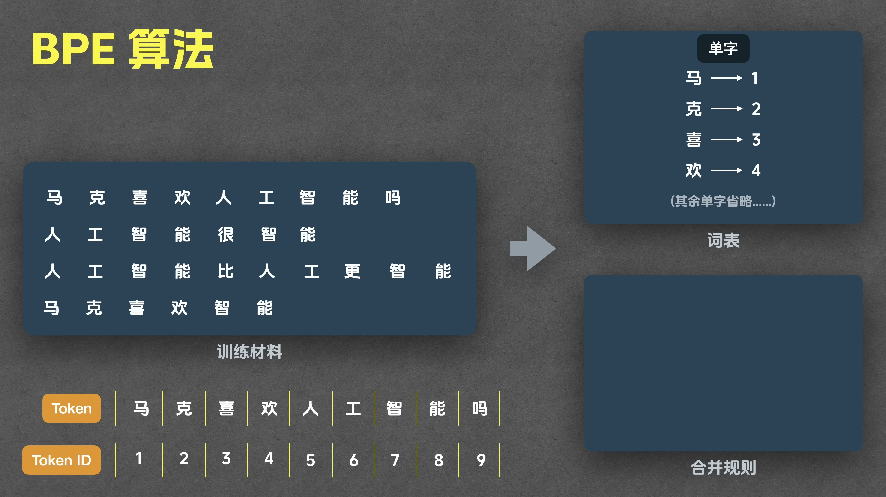
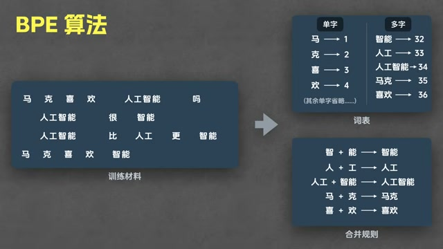
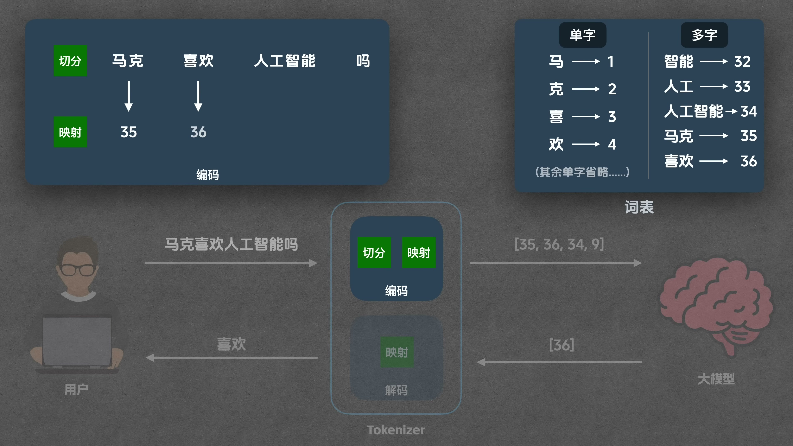
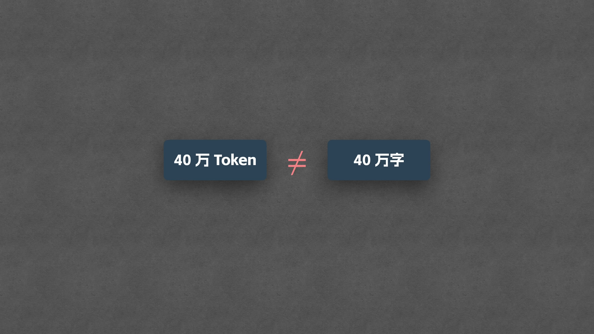

Context Window 代表模型一次能处理的最大信息量,但它的单位是 Token 而非字——Token 是什么、怎么生成,是本片要讲透的问题。
00:00 – 00:37
代理画质GPT-5.2 的 40 万 context window 指 40 万个 Token;Token 与字、词的关系少有人讲清。

代理画质大模型本质是巨大的数学函数,输入输出全是数字;Tokenizer 站在人与模型之间,负责编码与解码两个环节。

编码分两步:先把问题切成最小单位 Token(示例切出 4 个),再把每个 Token 映射为一一对应的 Token ID——硬币的正反面。

Token ID 列表交给模型运算,吐出的 Token ID 再由 Tokenizer 解码映射回文字;解码无需切分。切分与映射如何实现?这要从 Tokenizer 的训练说起。
Tokenizer 是训练出来的:以 BPE 为例,从训练材料统计共现,迭代合并高频相邻字,产出词表与合并规则两个核心组件。
03:06 – 07:42
训练远比大模型训练简单;Google 多用 Unigram,OpenAI 和 Anthropic 多用 BPE,本片以 BPE 演示。

所有出现过的单字进词表,逐个分配 Token ID;Token ID 无语义,与 Embedding 无关,仅需保证一对一。

单字词表已是简易 Tokenizer,但 9 字输入远慢于 4 词输入;把常见词收进词表才是最佳方案,方法是找规律。

代理画质扫描统计共现频率,最高者合并并同步更新词表与合并规则;合并产物可继续参与合并,训练完毕后核心组件即词表 + 合并规则。
把用户问题先拆成一个一个的单字。
按训练所得合并规则的顺序逐条套用:智+能→智能,人+工→人工。
合并可叠加:人工+智能→人工智能;喜+欢→喜欢,马+克→马克。
「马克喜欢人工智能吗」9 个字最终切分为 4 个 Token。

映射即查词表取 Token ID(马克→35、喜欢→36);解码反向查表,36 映射回“喜欢”,全流程闭环。
Tokenizer 既是翻译机也是压缩机;1 Token ≈ 1.5–2 个汉字或 0.75 个英文单词,40 万 Token ≈ 60–80 万汉字。
09:27 – 10:31
常在一起的字被合成一个 Token,输入更少、训练与推理效率更高——回答了开头 Token ≠ 字的疑问。
1 个 Token 大概能代表的汉字数
≈ 4 个英文字母,或 0.75 个英文单词
40 万 Token 的 Context Window 约合的汉字量(≈ 30 万英文单词)